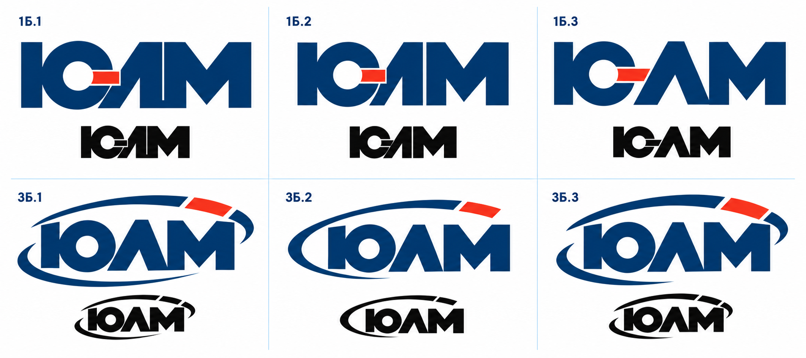
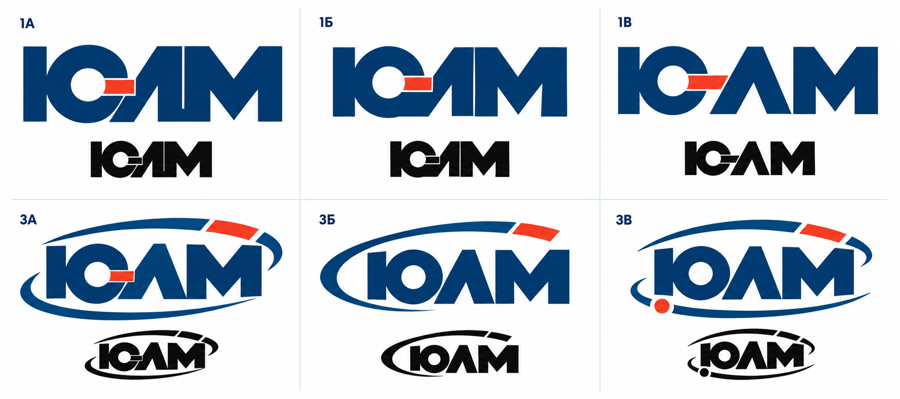
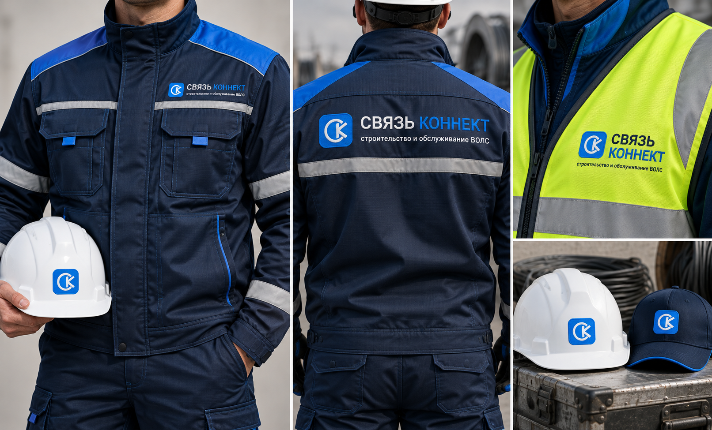
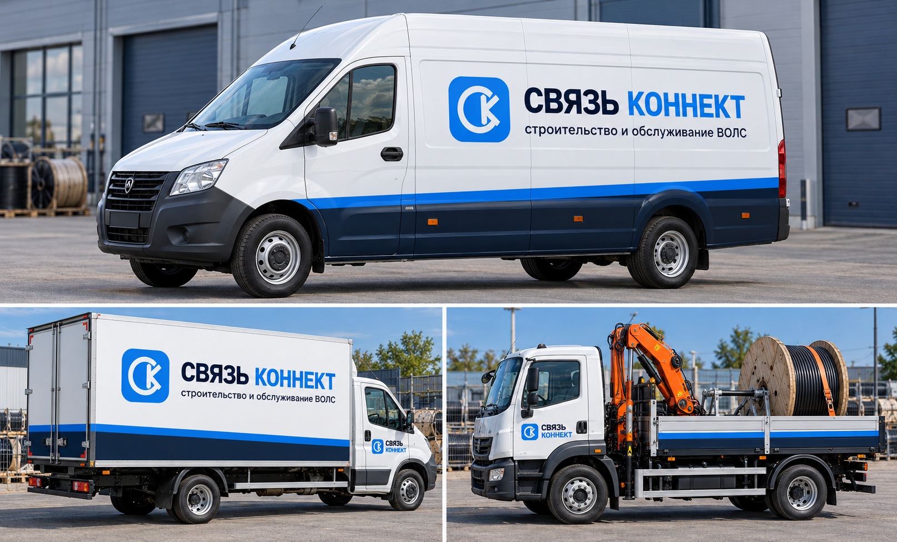

ЮЛМ. Развитие двух направлений
Открыть крупноЛигатура с красным соединением и знак с орбитой. По три варианта в каждом направлении; под цветными знаками показаны монохромные версии.

Нажмите на изображение, чтобы рассмотреть детали.
1Б. Лигатура
Плотное соединение букв, более свободные просветы и открытое начертание. Красный элемент связывает Ю и Л.
3Б. Орбита
Три решения дуги: охватывающая, открытая и более массивная. Красный сегмент завершает движение линии.
Эскизы для выбора направления. Геометрия выбранного знака будет уточнена при подготовке векторного оригинала.
Предыдущий этап: направления 1 и 3

Связь Коннект. Финальный знак
Белая монограмма СК в синей плашке. Название в одну строку, подпись «строительство и обслуживание ВОЛС».


Спецодежда и экипировка
Открыть крупно
Служебный транспорт
Открыть крупно
Визуализации показывают принцип нанесения. Производственные макеты готовятся под размеры одежды и конкретные модели автомобилей.